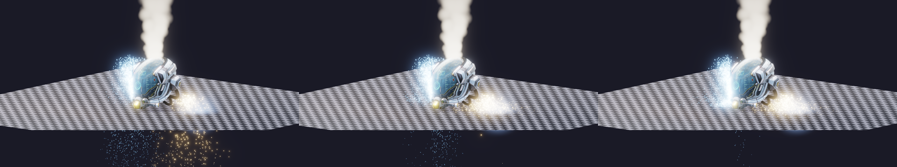
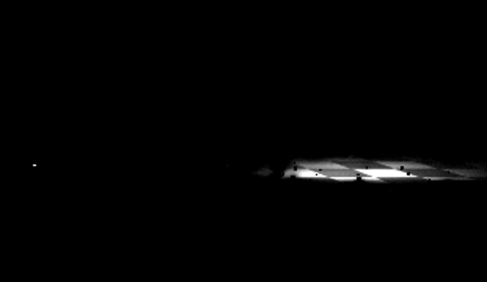

GPU 파티클(VFX) 구현 기록
2026-11-17 · 세 단계 모두 완료. 컴퓨트 RHI(compute-uav-record.html) 위에 컴퓨트 셰이더로 움직이는 GPU 파티클을 세 단계로 올리는 과정을 단계마다 적는 기록입니다. 단계가 검증되면 그 장을 채우고, 아직 하지 않은 단계는 계획과 "시작 전에 확인할 것"만 둡니다. 지금 코드의 구조와 원리만 보려면 12장부터 읽으면 됩니다.
| 단계 | 내용 | RHI 변경 | 상태 |
|---|---|---|---|
| 1 | 고정 최대 개수 파티클: CS 가 링 버퍼로 생성·적분, VS 가 SV_VertexID 로 버퍼를 읽어 빌보드, 가산 블렌딩 | 없음 | 완료 2026-11-17 |
| 2 | GPU 가 생존·사망 목록과 개수를 관리하고 살아 있는 것만 그림 — 간접 그리기·디스패치 | 있음 (raw 버퍼, 간접 인자 버퍼, DrawInstancedIndirect/DispatchIndirect, D3D12 커맨드 시그니처) | 완료 2026-11-17 |
| 3 | 알파 블렌딩 파티클의 바이토닉 정렬(CS), 깊이 충돌, 소프트 파티클 | 있음 (읽기 전용 DSV, ResourceState::DepthRead) | 완료 2026-11-17 |
기준: 커밋 04c26bb(컴퓨트 RHI 완료) + 작업 트리. 위치는 "파일 + 함수 이름"이 기준입니다. 이 문서는 새로 만든 것입니다.
1. 계획 — 왜 이 세 단계인가
GPU 파티클의 핵심은 "CPU 가 파티클 하나하나를 모르게 하는 것"입니다. 단계마다 CPU 가 아는 것을 하나씩 GPU 로 넘깁니다.
| 단계 | CPU 가 아는 것 | GPU 가 하는 것 | 새로 검증되는 RHI 경로 |
|---|---|---|---|
| 1 | 이번 프레임 생성 수, 링 버퍼 위치, 버퍼 크기(= 그리는 쿼드 수) | 생성 초기값(난수), 적분, 빌보드 | VS 의 구조체 버퍼 SRV, 다음 프레임 SRV→UAV 전이(D3D11 바인딩 해제) |
| 2 | 이미터의 생성률뿐 | 사망 목록에서 꺼내 생성, 생존 목록 작성, 그리기 인자 작성 | 원자적 카운터, 같은 버퍼에 연달아 쓰는 Dispatch 사이의 UavBarrier(Buffer), 간접 그리기·디스패치 |
| 3 | 정렬 기준(카메라) | 뷰마다 깊이 정렬, 깊이 버퍼와 충돌·부드러운 경계 | 깊이 텍스처를 읽으면서 깊이 테스트 (읽기 전용 DSV 또는 복사) |
2. 1단계 요약 (2026-11-17 완료)
Draw(N × 6)·112 바이트 상수·슬롯 하나짜리 시뮬레이션 셋은 지금 트리에 없습니다. 바뀐 점은 10·11장에 있고, 지금 코드 전체의 구조와 원리는 12장에 한 번에 정리했습니다. 4장 컴포넌트는 속성이 더 늘었고(12.3), 시뮬레이션 자리는 프레임 처음에서 씬 패스 사이로 옮겼습니다(12.2).ParticleEmitter 컴포넌트를 오브젝트에 붙이면, 렌더러가 이미터마다 파티클 버퍼(RWStructuredBuffer)를 만들어 프레임에 한 번 컴퓨트로 생성·적분하고, 메인·미리보기 뷰에서 정점 버퍼 없이 빌보드로 그립니다. RHI 는 고치지 않았습니다. 편집 모드에서도 움직입니다. 이미터가 없는 씬은 이전과 픽셀 단위로 같고, 고정 스텝(--particle-step)에서는 실행마다·두 백엔드 사이 모두 같은 화면입니다.
ParticleTest.json, D3D12, 고정 스텝 120 프레임. 헬멧 위 연기(위로 뜨며 커짐), 왼쪽 분수(파란색, 중력), 오른쪽 불꽃(전방향, 강한 HDR 색 — 밝은 바닥 위라 잘 안 보임). 블룸이 HDR 색을 번지게 함.
3. 흐름
Renderer::Render
BeginResourceUploads
BuildDrawList → addObject → CollectEmitter 이미터 컴포넌트 + 월드 위치·방향(로컬 +Y) 모음 (메시 없는 오브젝트도)
UpdateParticleEmitters(totalTime) dt 결정, 버퍼·셋 생성/크기 변경, 생성 수·링 위치, b8 올림 (이미터마다 1 번)
EndResourceUploads
SimulateParticles (렌더 패스 밖, 프레임에 1 번)
이미터마다: Barrier(particles, UnorderedAccess) → SetComputeResourceSet(0, simSet) → Dispatch(ceil(N/64))
→ Barrier(particles, ShaderResource)
ShadowPass → MainPass
DrawItems: 불투명 → 하늘 → 블렌딩 항목 → DrawParticles → 디버그 선
DrawParticles: SetPipelineState(Particle) → SetResourceSet(0, frame) → 이미터마다 SetResourceSet(1, drawSet), Draw(N × 6)
끝나면 SetResourceSet(1, objectSet) 로 되돌림
후처리 → 톤 → PreviewPass (같은 DrawItems → 같은 파티클 버퍼, b0 만 미리보기 카메라)
프레임 끝: 버퍼 상태 → Common (다음 프레임에 다시 Barrier)4. 컴포넌트 (Scene/ParticleEmitter)
CameraComponent 와 같은 방식의 엔진 컴포넌트입니다 (SHERLOCK_BEHAVIOUR). Reflect 만 쓰면 씬 저장·불러오기, 인스펙터, Add Component 목록, undo 가 모두 따라옵니다. Update 를 쓰지 않으므로 Play 와 상관없이 렌더러가 매 프레임 시뮬레이션합니다.
| 속성 (씬 키) | 기본값 | 뜻 |
|---|---|---|
maxParticles | 4096 | 버퍼 크기, [1, 262144] 로 자름. 다 차면 가장 오래된 것부터 덮어씀 |
spawnRate | 500 | 초당 생성 수 (소수 부분은 다음 프레임으로 넘김) |
lifetime | 2 | 초 |
startSpeed · speedVariation | 3 · 0.3 | 속도 = startSpeed × (1 − variation × 난수) |
spreadAngle | 20 | 방출 원뿔의 반각(도). 축 = 오브젝트의 로컬 +Y |
emitRadius | 0.05 | 생성 위치가 퍼지는 구 반지름 |
gravity | (0, −4, 0) | 가속도 (월드) |
startSize → endSize | 0.08 → 0.02 | 쿼드 한 변, 수명 동안 선형 보간 |
color × intensity | (1, 0.55, 0.2) × 4 | HDR 색. 1 을 넘으면 블룸에 걸림 |
5. GPU 데이터
| 항목 | 값 |
|---|---|
파티클 (Common.hlsli struct Particle) | 32 바이트: float3 position, float age, float3 velocity, float lifetime. age >= lifetime = 죽음 (NaN 도 죽음으로) |
| 파티클 버퍼 | 이미터마다 SB_Particles: Default, SRV | UAV, stride 32 (kParticleStride) |
| 이미터 상수 b8 | ParticleEmitterConstants 112 바이트 (오프셋 static_assert). 이미터마다 Dynamic 버퍼 한 벌, 프레임에 한 번 올림 |
| 시뮬레이션 셋 | Layout_ParticleSim: b8 (CS), u0 BufferUnorderedAccess (CS) |
| 그리기 셋 (셋 1) | Layout_ParticleDraw: b8 (VS), t21 BufferResource (VS). 셋 0 은 프레임 셋 (b0 의 view·proj) |
그리기 PSO Pass_Particle | 정점 입력 없음, 컬링 없음, 깊이 테스트 Less + 쓰기 끔, 가산 블렌딩 (One + One, 알파 유지), FP16 + D24S8 |
| 컴퓨트 PSO | ComputePass_ParticleSim (GetComputePipeline) |
6. 시뮬레이션 (ParticleSimComputeShader.hlsl, Renderer::UpdateParticleEmitters)
- 링 버퍼 생성: CPU 가
spawnCount = floor(spawnRate × dt + 이월분)와 시작 인덱스head를 정해 b8 로 넘기고head += spawnCount. CS 에서(i − spawnStart) mod N < spawnCount인 스레드가 새 파티클을 씀. 살아 있던 것이 있어도 덮어씀 (가장 오래된 것). - 프레임 안 출생 시각: 한 프레임에 태어난 파티클을 한 점에 두면 프레임마다 층이 보입니다. 구간 앞쪽일수록 일찍 태어난 것으로 보고
age = dt × (1 − (offset + 0.5) / spawnCount)만큼 미리 움직여 둡니다 (등가속도 식). - 난수: PCG 해시 (
PcgHash,Random01). 씨앗 = 이미터의 프레임 번호. 처음에는 버퍼 슬롯i로 섞었다가PcgHash(offset ^ PcgHash(seed))— "이번 프레임에 몇 번째로 태어났나" — 로 바꿨습니다. 2단계는 슬롯을 GPU 가 사망 목록에서 고르므로 슬롯에 묶인 난수는 실행마다 달라지고, 출생 순번에 묶어야 2단계 화면을 1단계와 비교할 수 있습니다. 상태를 저장하지 않으므로 같은 (씨앗, dt) 면 결과가 같습니다. - 방향: cosθ 를 [cos(반각), 1] 에서 고르게 → 구면 위에서 고른 원뿔 분포. 생성 위치는 구 안의 고른 점 (반지름에 세제곱근).
- 적분: 반암시적 오일러 (속도 먼저, 새 속도로 위치).
- 새 버퍼 초기화: 버퍼를 만든 프레임에는 b8 의
reset = 1로 CS 가 전부 죽은 상태로 씀 (D3D11 은 초기 데이터 없이 만들므로 내용이 정해져 있지 않음). 그 프레임에는 생성하지 않음. - dt: 실제 시간 모드는
totalTime의 차이를 0.1 초에서 자름.RenderSettings::particleFixedStep > 0이면 프레임마다 그 값 — 자동 검증의--particle-step=0.0166667.
7. 그리기 (ParticleVertexShader.hlsl · ParticlePixelShader.hlsl)
Draw(N × 6), 정점 버퍼 없음. VS 가SV_VertexID / 6로 파티클,% 6로 쿼드 모서리를 정함.- 빌보드: 뷰 공간에서 중심에 모서리 × 크기/2 를 더한 뒤 투영. 카메라의 오른쪽·위 축을 따로 뽑지 않아도 늘 화면을 향하고, 직교 카메라에서도 그대로 동작.
- 죽은 파티클: 세 정점을 모두 클립 공간 밖 (
z = −1) 한 점에 둠 → 래스터라이저가 버림. 1단계는 버퍼 전체를 그리므로 죽은 파티클도 VS 6 번은 돕니다 — 2단계가 없애는 비용. - 색: 처음 10% 동안 켜지고 끝까지 선형으로 꺼짐. PS 는 텍스처 없이
(1 − r²)²원형 감쇠,r ≥ 1은 discard. - 가산 블렌딩이라 그리는 순서와 상관없음 → 정렬 없음. 깊이는 테스트만 해서 불투명 물체 뒤는 가려지고 파티클끼리는 가리지 않음.
8. 설계 결정·함정
- 이미터마다 상수 버퍼: 공용 버퍼 하나를 시뮬레이션과 뷰마다의 그리기 사이에 다시 올리면, D3D12 에서 업로드 링 주소가 바뀌어 루트 CBV 순서 문제가 생깁니다 (블러
PostParams에서 겪은 것). 프레임에 한 번 올린 값을 CS·VS 가 같이 읽게 했습니다. - 셋 1 되돌리기: 파티클 그리기는 셋 1 에 파티클 셋을 꽂습니다. 미리보기 패스의
DrawItems는 셋 1 = 오브젝트 셋을 전제하므로 그리기 뒤에SetResourceSet(kSetObject, m_objectSet)로 되돌립니다. - GPU 상태의 키: 오브젝트 ID × 16 + 오브젝트 안의 순번. undo·씬 로드가 오브젝트를 다시 만들어도 ID 가 같으면 이어서 씁니다. 이번 프레임에 보이지 않은 키(삭제·꺼짐)는 리소스를 지웁니다 (D3D12 는 지연 해제).
- 매 프레임 배리어: 버퍼 상태는 프레임 끝에 Common 으로 돌아가므로 (컴퓨트 RHI 규칙) 매 프레임 UAV → SRV 를 다시 겁니다. D3D11 에서는 UAV 전이가 지난 프레임에 VS t21 에 남은 SRV 를 풀어 줍니다.
- 결정적 시간: 에디터 시간은 실제 시계라 스크린샷이 실행마다 달라집니다. 시뮬레이션만 프레임 수에 묶는
--particle-step을 넣었습니다 (엔진 시간은 그대로). - 메시 없는 오브젝트:
BuildDrawList의addObject가 메시 없으면 바로 돌아가므로, 이미터 수집을 그 앞에 둡니다.
9. 1단계 검증
| 확인 | 결과 |
|---|---|
이미터 없는 씬(ComputeBlur.json) — 변경 전 ↔ 후 | 에디터·게임, D3D11·D3D12 모두 차이 0 |
ParticleTest.json, 고정 스텝 120 프레임, 같은 백엔드 두 번 | D3D11 0, D3D12 0 |
| 같은 조건 D3D11 ↔ D3D12 | 에디터 0 / 게임 11 픽셀 1 단계 |
카메라 미리보기 (--select="Main Camera") | 미리보기에 파티클이 그려짐, 씬 내용 D3D11 = D3D12 (차이는 제목줄 백엔드 이름과 기존 잡음 띠뿐) |
| 바인딩 대조 | [Particle] ParticleVS t21 / b0 / b8, [ParticleSim] ParticleSimCS u0 / b8 OK, cbuffer 112 바이트 일치 |
GBV (--gpu-validation=1, D3D12) | 메시지 0 |
| 실제 시간 모드 (플래그 없음) | 정상, 경고 없음 |
핫리로드 (ParticleSimComputeShader.hlsl 수정 시각) | 두 백엔드 모두 컴퓨트 PSO·파티클 PSO 가 gen=2 로 다시 생성 |
확인하지 못한 것
- 에디터에서 이미터를 붙이고·떼고·끄는 것,
maxParticles를 바꿔 버퍼를 다시 만드는 경로 (자동 검증 플래그가 없음 — 손으로 확인 필요) - 이미터 오브젝트는 메시가 없어 씬 뷰에서 클릭으로 고를 수 없음 (Hierarchy 에서 고름). 아이콘 기즈모는 아직 없음
- Release 빌드, 다른 GPU
- (앞 작업에서 이어짐) 실행 중 Compute blur 체크박스 토글
10. 2단계 — 간접 그리기 + GPU 생존·사망 목록 완료 2026-11-17

10.1 RHI 에 더한 것
| 항목 | 내용 | 왜 |
|---|---|---|
BufferBind_Raw, BufferBind_IndirectArgs | raw(ByteAddressBuffer) 뷰, 간접 인자 버퍼. 규칙은 ValidateBufferDesc 한 곳에서 두 백엔드가 같이 씀 (Default 만, raw 는 stride 0·크기 4 의 배수, IndirectArgs 는 Raw 필수·Vertex/Index/Constant 와 함께 못 씀) | D3D11 의 DRAWINDIRECT_ARGS 는 BUFFER_STRUCTURED 와 함께 쓸 수 없음 → 구조체 버퍼 UAV 로는 인자 버퍼에 쓸 수 없음. raw / typed 중 raw 를 고름 (리플렉션 타입이 따로 있어 구분이 깔끔함) |
BindingType::RawBufferResource (t#) / RawBufferUnorderedAccess (u#, 컴퓨트 전용) | 리플렉션 D3D_SIT_BYTEADDRESS / D3D_SIT_UAV_RWBYTEADDRESS. D3D11: SRV BUFFEREX + RAW, UAV BUFFER_UAV_FLAG_RAW (R32_TYPELESS). D3D12: 서술자 테이블에 raw SRV/UAV | 컴퓨트가 인자를 씀 |
ResourceState::IndirectArgument | D3D12 INDIRECT_ARGUMENT. D3D11 은 이 상태로 갈 때 그 버퍼의 UAV 바인딩을 풂 | 인자를 읽는 동안 UAV 로 쓸 수 없음 |
DrawInstancedIndirect(args, offset) / DispatchIndirect(args, offset) | Draw / Dispatch 와 같은 바인딩·검사 경로. 상태·플래그·오프셋 검사. D3D12 는 장치 초기화 때 커맨드 시그니처 두 개(DRAW 16 바이트, DISPATCH 12 바이트, 루트 시그니처 nullptr)를 만들어 ExecuteIndirect | 개수를 GPU 가 앎 |
인스턴스 간접을 고른 이유: 인자 {정점 6, 인스턴스 = 생존 수, 0, 0} 이라 시뮬레이션이 센 생존 수를 그대로 쓰면 됨. 정점 수 간접(생존 × 6)이면 곱하는 단계가 하나 더 필요.
10.2 프레임 흐름 (이미터마다)
버퍼: particles(u0) · dead(u1) · aliveIn(u2) · aliveOut(u3) · counters(u4) · args(u5, raw)
생존 목록 두 개를 번갈아 씀 — 지난 프레임의 aliveOut 이 이번 프레임의 aliveIn
모두 → UnorderedAccess
[새 버퍼만] CS_ParticleReset 전부 죽음, dead = 모든 슬롯, 개수 0, 인자 {6,0,0,0} {0,1,1} → UAV 배리어
args → IndirectArgument
CS_ParticleSim DispatchIndirect(args, 16) aliveIn 을 적분 → 살면 aliveOut 에, 죽으면 dead 에 (InterlockedAdd)
args → UnorderedAccess → UAV 배리어
CS_ParticleArgs 스레드 1개 emit = min(원하는 수, dead 길이). 꺼낼 dead 구간·붙일 alive 구간의 시작을 기록,
그리기 인자 {6, 생존+emit, 0, 0}, 다음 프레임 디스패치 인자, 생존 카운터 0 으로 → UAV 배리어
CS_ParticleEmit Dispatch(ceil(원하는 수/64)) 스레드 t: dead[구간+t] 슬롯에 새 파티클, aliveOut[구간+t] 에 붙임
particles · aliveOut → ShaderResource, args → IndirectArgument
씬 패스마다: DrawInstancedIndirect(args, 0) — VS: particles[aliveList[SV_InstanceID]]- 생성에 원자 연산이 없음: Args 단계가 구간 시작을 정해 두므로 생성 스레드 t 의 슬롯·목록 위치가 정해짐. 순서가 흔들리는 것은 시뮬레이션의 InterlockedAdd 뿐 → 그리는 순서만 달라지고, 가산 블렌딩이라 FP16 덧셈 반올림 차이(최하위 1 단계)만 남음.
- 1단계와 같은 파티클: 난수·출생 시각이 출생 순번 t 에 묶이고, 태어난 프레임에는 적분하지 않으며 (생성이 시뮬레이션 뒤), 죽음 판정(
age < lifetime)과 첫 생성 프레임(리셋 다음)이 같음. 버퍼가 다 차지 않으면 1단계와 같은 집합이 살아 있음. - 다 찼을 때가 다름: 1단계는 가장 오래된 것을 덮어썼고, 2단계는 사망 목록이 빌 때까지만 태어남 (그림 4).
- 시뮬레이션 셋에서 u5 를 뺌 (
Layout_ParticleStep): 처음에는 네 CS 가 레이아웃 하나를 썼는데, 간접 디스패치 동안 인자 버퍼가 IndirectArgument 상태인데도 셋이 그것을 u5 UAV 로 바인딩하고 있었음. 셰이더가 u5 를 쓰지 않아도 바인딩 자체가 위험이고, 두 백엔드의 상태 검사가 첫 실행에서 잡았음 ("UAV 로 쓰는 버퍼 'RB_ParticleArgs' 가 IndirectArgument 상태"). - 셰이더 파일이 넷: 런타임이 파일 이름으로
.cso를 찾으므로 파일 하나에 진입점 하나. 공용 선언은Common.hlsli의#ifdef PARTICLE_SIM블록 (핫리로드 감시 대상이라서). - CPU 는 생존 수를 읽어 오지 않음 — Stats 의 "spawned" 는 원하는 수.

ParticleExhaust.json: 분수만 capacity 1024 (필요 1,500 × 1.8 ≈ 2,700). 프레임당 25 개씩 41 프레임 만에 슬롯이 다 차고, 첫 파티클이 죽는 108 프레임 무렵까지 생성이 멈춤 → 분수가 끊긴 덩어리로 나옴 (75 · 100 · 200 프레임을 찍어 보면 덩어리가 올라갔다 비었다 함). 그림은 240 프레임. 오류·경고 없음.10.3 2단계 검증
| 확인 | 결과 |
|---|---|
회귀: ComputeBlur.json 에디터, 두 백엔드 | 차이 0 |
회귀: MasterChiefWalk.json | 5~6 픽셀 — 바꾸지 않은 실행끼리도 같은 자리에서 같은 정도로 달라짐 (애니메이션이 실제 시간). 회귀 아님 |
1단계 ↔ 2단계 (ParticleTest, 고정 스텝 120 프레임) | 에디터 D3D11 496 / D3D12 577 픽셀, 게임 517 / 618 픽셀, 모두 최대 1 |
| 2단계 실행 두 번 | D3D11 431 / D3D12 522 픽셀 최대 1 (생존 목록 순서). D3D11 ↔ D3D12 476 픽셀 최대 1 |
| 누수: 300 ↔ 3,000 프레임, 이미터 영역 평균 밝기 | 분수 165.6 / 165.4, 연기 112.7 / 113.7, 불꽃 221.7 / 222.1 — 슬롯이 새면 줄어야 함 |
고갈 (ParticleExhaust.json) | 그림 4, D3D11 ↔ D3D12 최대 1 |
미리보기 뷰 (--select="Main Camera") | 미리보기에 파티클이 그려짐. D3D11 ↔ D3D12 최대 1 (콘솔 쪽 기존 잡음 띠 제외) |
| 게임 모드, 실제 시간 모드 | 정상, 경고 없음 |
실행 중 이미터 생성·삭제 (ParticleSpawn.json, --play=1: Spawner 가 0.1 초마다 EmitterBurst.prefab(이미터 + Lifetime 0.6 초) 을 만듦) | D3D11 16 개, D3D12 24 개, GBV 40 개를 만들고 지움 (동시에 6 개). 오류·GBV 메시지 0 — 이미터마다 버퍼 7 개·셋 6 개의 생성·지연 해제 경로 |
GBV (--gpu-validation=1) | 메시지 0 — 처음 쓰인 UavBarrier(Buffer), ExecuteIndirect, raw UAV 서술자, IndirectArgument 전이 포함 |
핫리로드 (ParticleEmitComputeShader.hlsl) | 두 백엔드 모두 컴퓨트 PSO 4개 gen=2 |
확인하지 못한 것
- 실행 중
maxParticles변경 (같은 키로 버퍼를 다시 만드는 경로) — 손으로 확인 필요 RawBufferResource(raw SRV, t#) 는 RHI 에 있지만 렌더러가 쓰지 않아 한 번도 실행되지 않음. D3D12 에서 구조체 SRV(루트 SRV)와 달리 서술자 테이블에 들어감- RHI 의 거부 경로 (잘못된 플래그 조합, 범위 밖 오프셋) 는 코드만 있고 일부러 실행해 보지 않음
- Release 빌드, 다른 GPU
11. 3단계 — 소프트 파티클·깊이 충돌·알파 정렬 완료 2026-11-17
blendMode) 이고, 알파 이미터만 뷰마다 바이토닉 정렬로 먼 것부터 그립니다. 새 속성의 기본값은 모두 "끔"이라 기존 씬(ParticleTest)은 2단계와 최하위 1 단계 차이로 같습니다.
ParticleAll.json (분수·불꽃 충돌, 바닥 안개 소프트, 연기 알파) 과 카메라 미리보기, D3D12. 충돌 두께 수정 (11.3) 전에 찍음.결정 (사용자): 깊이 읽기 = 읽기 전용 DSV (RHI 확장), 알파·정렬 = 이미터 옵션, 충돌 깊이 = 이번 프레임.
11.1 RHI — 읽기 전용 깊이
| 항목 | D3D11 | D3D12 |
|---|---|---|
ResourceState::DepthRead | 상태 추적만 | DEPTH_READ | PIXEL_SHADER_RESOURCE | NON_PIXEL_SHADER_RESOURCE — 읽기 전용 DSV·PS SRV·CS SRV 를 같은 상태에서 |
DepthAttachment::readOnly | 텍스처마다 처음 쓸 때 D3D11_DSV_READ_ONLY_DEPTH | READ_ONLY_STENCIL DSV 를 만들어 둠. 읽기 전용 패스는 그 깊이의 SRV 바인딩을 풀지 않음 (쓰기 패스는 예전처럼 풂) | D3D12_DSV_FLAG_READ_ONLY_DEPTH | _STENCIL 서술자를 처음 쓸 때 만듦 (DSV 힙 16 → 32) |
| 규칙 검사 (두 백엔드 같음) | 읽기 전용 패스는 지우지 않음 (load 가 Load 가 아니면 한 번 기록). 깊이가 DepthRead 가 아니면 기록. 깊이 쓰기 PSO 로 그리면 기록하고 드로우를 건너뜀. DepthRead 인 깊이로 쓰기 패스를 열면 기록. | |
11.2 씬 패스 둘로 (RenderScenePass)
Barrier(depth, DepthWrite)
패스 1 hdr Clear, depth Clear 불투명 → 하늘 → 블렌딩 항목
Barrier(depth, DepthRead) ← 그릴 파티클·디버그 선이 없으면 여기부터 생략 (패스 수 그대로)
[메인 뷰만] SimulateParticles 리셋 → 적분 + 충돌 (t23 = 깊이, b9 = 메인 카메라) → 개수·인자 → 생성
SortParticles(뷰 번호) 알파 이미터만, 이 뷰의 카메라로
패스 2 hdr Load, depth Load + readOnly 파티클 (t23 = 이 뷰의 깊이) → 디버그 선- 시뮬레이션이 프레임 처음에서 메인 패스 사이로 옮겨짐 → 충돌이 이번 프레임 깊이·카메라를 씀. 미리보기 뷰는 같은 결과를 그리기만 함.
- 디버그 선도 패스 2 로 옮김 (깊이 테스트 없는 PSO 라 결과 같음).
- 블렌드를 프리멀티플라이드 (
One + InvSrcAlpha) 하나로: 가산 이미터는 알파 0 을 내보내 예전One + One과 같은 값, 알파 이미터는 색 × 알파 · 알파. PSO 하나.
11.3 소프트 파티클과 충돌
- 소프트 (
softnessm, 0 = 끔): PS 가t23.Load(SV_Position)의 깊이를 투영 행렬 (proj._m22 / _m32 / _m23) 로 뷰 z 로 되돌려, 파티클 뷰 z 와의 차이 / softness 를 곱함. 원근·직교 둘 다. - 충돌 (
collide,bounce): 적분 뒤 위치를 메인 카메라로 투영해 그 픽셀 깊이와 비교. 깊이 버퍼보다 뒤이고 표면에서 0.3 m (kCollisionThickness) 안이면 충돌 — 이전 위치로 되돌리고, 이웃 두 픽셀을 월드로 되돌려 만든 법선 (카메라 쪽으로 방향을 맞춤) 의 속도 성분을(1 + bounce)배 빼서 반사. 화면 밖·카메라 뒤·가려진 곳에서는 충돌하지 않음 (화면 공간 충돌의 한계). - 두께는 법선 방향으로 잼: 처음에는 뷰 z 차이 < 0.3 m 로 판정했는데, 직교 카메라로 바닥을 비스듬히 (약 10°) 보는 게임 화면에서 분수 파티클이 바닥을 뚫고 떨어졌음 (그림 6-1 가운데). 바닥 아래 0.1 m 가 뷰 z 로는 0.1 / sin 10° ≈ 0.57 m 라 한 스텝에 두께를 넘음. 지금은 뷰 z 차이를 느슨한 상한 (두께 × 5) 으로만 쓰고, 표면 점에서 법선 방향 거리가 −0.3 m 보다 얕을 때 충돌로 봄. 같은 판정이 원근에도 적용됨 (원근 시험 화면에서는 바닥이 가려 새는 양을 재지 못함).
- 충돌 상수 b9 (
ParticleCollisionConstants160 바이트) 는 프레임에 한 번, 깊이 셋 (t23) 은 뷰 타깃마다 — 크기를 바꿔 깊이를 다시 만들면 셋도 다시 만듦.

ParticleDepthOff.json, 오른쪽 ParticleDepth.json (300 프레임, 법선 방향 두께). 오른쪽은 분수(파랑)·불꽃(노랑)이 바닥에 튕겨 퍼짐.
ParticleOrtho.json 게임 모드 (메인 카메라 직교, D3D12, 200 프레임). 왼쪽 충돌 끔, 가운데 뷰 z 두께 (고치기 전), 오른쪽 법선 방향 두께. 바닥 아래 (화면 아래 20%) 밝은 픽셀 10,516 → 1,050 → 106.
11.4 알파 이미터 정렬 (바이토닉, 뷰마다)
CS_ParticleSortInit: 생존 목록 앞 생존 수 칸 (개수 버퍼를 t24 SRV 로 읽음) → (키 = 이 뷰의 뷰 z, 값 = 파티클 번호). 나머지는 2 의 거듭제곱 (ParticleSortCount, 최소 64) 까지 가장 가까운 키로 채워 끝으로 보냄.CS_ParticleSortStep: k = 2 … N, j = k/2 … 1 마다 한 번. N = 2^m 이면 m(m+1)/2 번 (4,096 → 78, 262,144 → 171). 단계 사이 UAV 배리어.- (k, j) 는 단계마다 Default 상수 버퍼를 초기 데이터로 한 번 만들어 둠 (
EnsureParticleSortSteps, 큰 N 의 단계 목록은 작은 N 목록을 앞에 그대로 가짐). 디스패치마다 다른 값을 Dynamic 버퍼 하나에 올릴 수 없음 (D3D12 프레임당 한 번 규칙). 엔진에서 Default 상수 버퍼는 처음 — D3D12 백엔드가 크기를 256 으로 올리고 그만큼 초기 데이터를 복사하므로 구조체를 256 바이트로 맞춤. - 정렬 결과는 이미터 × 뷰 (메인 0, 미리보기 1) 마다 따로. 뷰 행렬 b10 은 뷰마다 Dynamic 버퍼. 정렬은 그 뷰의 패스 2 직전 (렌더 패스 밖).
- 그리기: 알파 이미터 먼저 (t22 = 정렬된 번호), 가산 이미터 그 위. 정렬은 이미터 안에서만 — 겹치는 알파 이미터끼리는 정렬되지 않음.
- 시험하다 알게 된 것: 한 이미터의 파티클 색이 모두 같으면 프리멀티플라이드 알파의 결과는 순서와 상관없음 (c·a₂ + (1−a₂)(c·a₁ + (1−a₁)d) 이 a₁, a₂ 에 대칭). 정렬 효과를 보려면 파티클마다 색이 달라야 해서
endTint(수명 끝 색 배율, 기본 흰색 = 변화 없음) 를 더함.

ParticleAlphaSort.json: 파티클이 카메라 쪽으로 날아오며 어두워짐. 왼쪽 --particle-sort=0, 오른쪽 정렬. 정렬하면 가까운 (오래된, 어두운) 파티클이 위에 그려져 구름이 어두워짐 — 구름 영역에서 정렬 쪽이 더 밝은 픽셀 0 개, 안 정렬 쪽이 더 밝은 픽셀 6,651 개 (최대 20 단계). 먼 것부터 순서가 맞다는 증거.11.5 3단계 검증
| 확인 | 결과 |
|---|---|
회귀: ComputeBlur.json | D3D11·D3D12 차이 0 |
회귀: ParticleTest.json ↔ 2단계 (패스 분리·블렌드 변경·endTint 후) | D3D11 515 / D3D12 626 픽셀 최대 1 (2단계 실행끼리의 생존 목록 순서 잡음과 같은 크기) |
| 미리보기 뷰 ↔ 2단계 | 미리보기 영역 최대 1. 차이 큰 곳은 콘솔 글자뿐 |
정렬 결정성 (ParticleAlpha.json, 두 번) | 정렬: D3D11 185 / D3D12 74 픽셀 최대 1. 안 정렬: 10,676 / 16,180 픽셀 최대 2~3 → 정렬이 그리기까지 감 |
| 정렬 방향 | 그림 8 |
| D3D11 ↔ D3D12 | ParticleAlpha 150 픽셀, 미리보기 28, 게임 253 — 최대 1. 충돌 수정 뒤 300 프레임 ParticleDepth 2,075 픽셀 · ParticleAll 1,435 픽셀, 둘 다 최대 2 단계 픽셀 3 개 (충돌 분기의 부동소수 차이가 궤적에 쌓인 것으로 봄) |
직교 카메라 (ParticleOrtho.json, 편집기 + 미리보기, 게임) | 소프트·충돌 모두 동작, 그림 6-1. 이 씬의 연기 이미터는 maxParticles 1,000 (2 의 거듭제곱 아님 → 정렬 1,024 칸, 채움 24 칸) 으로 정렬 경로도 실행, 오류 없음 (GBV 아님) |
파티클 없이 디버그 선만 (MasterChiefWalk.json --debug-bones=1) | 두 번째 패스가 열려 본 선이 그려짐 (bones=0 과 비교), 두 백엔드 경고 없음, GBV 메시지 0 |
플레이 중 알파 이미터 생성·삭제 (ParticleSpawnAlpha.json --play=1, 프리팹 EmitterBurstAlpha.prefab) | D3D12 GBV 900 프레임 (40 개 생성), D3D11 1,500 프레임 — 메시지 0. 정렬 버퍼·셋 지우기 포함, 프리팹의 maxParticles 700 → 정렬 1,024 칸 (2 의 거듭제곱이 아닌 경우를 GBV 아래에서) |
GBV (ParticleAll.json + 미리보기, D3D12) | 메시지 0 — 읽기 전용 DSV + 같은 깊이 SRV (PS·CS), Default 상수 버퍼, 정렬 디스패치 포함 |
| 게임 모드, 실제 시간 모드 | 정상, 경고 없음 |
핫리로드 (ParticleSortStepComputeShader.hlsl) | 두 백엔드 정렬 PSO 둘 gen=2 |
확인하지 못한 것·한계
- D3D11 에서 SRV + 읽기 전용 DSV 동시 바인딩에 런타임 경고가 없다는 것은 실행 로그 기준 (문서로 확인 안 함)
- 충돌: 화면 밖·가려진 곳·얇은 물체 (0.3 m) 에서 실패. 직교 게임 화면에서도 아주 적게 (106 픽셀) 바닥 아래로 빠짐, 미리보기 카메라와 상관없이 메인 뷰 깊이만 씀. 깊이 경계에서 법선이 틀릴 수 있음 — 특히 실루엣 픽셀에서는 법선이 옆을 향해, 물체 뒤 1.5 m (두께 × 5) 안의 파티클이 허공에서 튕길 수 있음 (한 픽셀 폭이라 드묾)
- 정렬: 이미터끼리는 안 함. 생존 수와 상관없이 capacity 크기로 정렬 (CPU 가 생존 수를 모름) — 4,096 이면 78 디스패치 × 뷰
- 실행 중
blendMode·maxParticles변경, 창 크기 변경 (깊이 셋 다시 만들기) 은 손으로 확인 필요 - MSAA 깊이의 읽기 전용 DSV (지금 MSAA 깊이 없음), Release 빌드, 다른 GPU
12. 지금 코드 구조와 원리 (3단계 기준)
12.1 한눈에 보기 — 층과 파일
Scene ParticleEmitter (컴포넌트, 값만) Scene/ParticleEmitter.h/.cpp
│ 렌더러가 매 프레임 읽음 (편집 모드에서도, Play 와 상관없음)
Renderer CollectEmitter → UpdateParticleEmitters Graphics/RendererParticles.cpp
(CPU) GpuEmitter (이미터마다 GPU 버퍼·셋 묶음) Graphics/Renderer.h
│ 버퍼를 만들고, 상수(b8)를 올리고, 명령을 기록
GPU 컴퓨트 Reset → Sim(+충돌) → Args → Emit Shaders/Particle{Reset,Sim,Args,Emit}ComputeShader.hlsl
SortInit → SortStep × m(m+1)/2 (알파만) Shaders/ParticleSort{Init,Step}ComputeShader.hlsl
│ 결과: 파티클 버퍼, 생존(또는 정렬) 목록, 간접 인자
GPU 그리기 DrawInstancedIndirect → VS 빌보드 → PS Shaders/ParticleVertexShader.hlsl · ParticlePixelShader.hlsl
공용 선언 Particle 구조체, b8/b9 cbuffer, 슬롯, 난수 Shaders/Common.hlsli · Graphics/ShaderConstants.h
RHI raw 버퍼, 간접 인자, 읽기 전용 깊이 RHI/*.h, RHI/D3D11, RHI/D3D12 (백엔드 구현은 10.1 · 11.1)핵심 원리 세 가지:
- CPU 는 "얼마나 태어나야 하는지"만 안다. 살아 있는 수·위치는 GPU 버퍼에만 있고 읽어 오지 않습니다(읽으면 GPU 를 기다려야 함). 그래서 시뮬레이션 디스패치 크기와 그리는 인스턴스 수를 GPU 가 직접 인자 버퍼에 쓰고, CPU 는
DispatchIndirect/DrawInstancedIndirect로 "그 버퍼에 적힌 만큼"이라고만 명령합니다. - 슬롯을 재활용한다. 파티클 버퍼는
maxParticles칸 고정입니다. 빈 칸 번호는 사망 목록에, 쓰는 칸 번호는 생존 목록에 있고, 파티클이 죽으면 번호가 사망 목록으로 돌아갑니다. 메모리를 새로 잡거나 압축하지 않습니다. - 깊이를 같은 프레임에 같이 읽는다. 불투명 물체를 다 그린 깊이를 읽기 전용으로 붙인 채 파티클을 그려서, 깊이 테스트(가려짐)와 깊이 읽기(소프트·충돌)를 깊이 복사 없이 함께 합니다.
12.2 프레임 하나의 호출 순서
Renderer::Render
BeginResourceUploads
BuildDrawList ─ (오브젝트마다) CollectEmitter 이미터 컴포넌트 + 월드 위치·방향(로컬 +Y) → m_frameEmitters
UpdateParticleEmitters(totalTime, camera) dt 결정, GpuEmitter 만들기/크기 맞추기, 생성 수, b8 / b9 / b10 올림,
안 보인 이미터 지우기 → m_activeEmitterKeys
EndResourceUploads
ShadowPass
MainPass = RenderScenePass(main view, viewIndex 0)
Barrier(depth, DepthWrite)
패스 1 "MainPass" hdr Clear · depth Clear 불투명 → 하늘 → 블렌딩 항목
(파티클 또는 디버그 선이 있을 때만)
Barrier(depth, DepthRead)
SimulateParticles [ParticleSim] 이미터마다 Reset? → Sim → Args → Emit ← 메인 뷰에서만, 프레임에 한 번
SortParticles(0) [ParticleSort] 알파 이미터마다 SortInit → SortStep …
패스 2 "MainPassEffects" hdr Load · depth Load + readOnly
DrawParticles(0) 알파(정렬됨) 이미터 먼저 → 가산 이미터
DrawDebugLines
후처리 → TonemapPass
PreviewPass = RenderScenePass(preview view, viewIndex 1) (에디터 카메라 미리보기가 있을 때)
패스 1 → Barrier(DepthRead) → SortParticles(1) → 패스 2 "PreviewPassEffects" (같은 파티클을 미리보기 카메라로)
…UI, Present. 프레임 끝: 모든 버퍼 상태가 Common 으로 돌아감 (다음 프레임에 다시 Barrier)- 시뮬레이션이 패스 1 과 패스 2 사이인 이유: 충돌이 이번 프레임의 불투명 깊이와 카메라를 써야 하기 때문입니다. 컴퓨트는 렌더 패스 밖이어야 하므로 패스를 둘로 나눴습니다.
- 미리보기는 시뮬레이션하지 않고 메인 뷰가 만든 결과를 자기 카메라로 그리기만 합니다. 정렬만은 카메라마다 거리 순서가 달라서 뷰마다 합니다.
- 파티클도 디버그 선도 없으면 패스 2 를 열지 않아 패스 수·배리어 수가 파티클 이전과 같습니다.
12.3 컴포넌트 (ParticleEmitter)
코드: class ParticleEmitter : Behaviour — Scene/ParticleEmitter.h:15, Reflect Scene/ParticleEmitter.cpp:4 (전체 지도는 12.13)
Behaviour 를 상속한 엔진 컴포넌트이고 SHERLOCK_BEHAVIOUR(ParticleEmitter) 로 등록됩니다. Reflect 에 적은 이름이 그대로 씬 JSON 의 키이자 Inspector 항목입니다(이름을 바꾸면 기존 씬 값이 기본값으로 돌아감). Update 를 쓰지 않아 편집 모드에서도 움직입니다 — 렌더러가 매 프레임 값을 읽어 가기 때문입니다.
| 속성 (기본값) | 뜻 | 쓰는 곳 |
|---|---|---|
maxParticles (4096) | 버퍼 칸 수. [1, 262,144] 로 자름. 바꾸면 버퍼를 새로 만들고 처음부터 | CPU (버퍼 크기), 모든 커널의 particleCapacity |
spawnRate (500) | 초당 생성 수 | CPU 가 프레임 생성 수로 바꿈 |
lifetime (2) | 수명(초). 태어날 때 파티클에 복사 | Emit |
startSpeed (3), speedVariation (0.3) | 속도 = startSpeed × (1 − variation × 난수) | Emit |
spreadAngle (20) | 방출 원뿔의 반각(도). 0 한 방향, 180 모든 방향. CPU 가 cos 로 바꿔 넘김 | Emit |
emitRadius (0.05) | 생성 위치가 퍼지는 구의 반지름 | Emit |
gravity (0, −4, 0) | 가속도 (월드, m/s²) | Emit, Sim |
startSize (0.08), endSize (0.02) | 쿼드 한 변, 수명 동안 선형 보간 | VS |
color, intensity (4) | 선형 RGB × 배율 = HDR 색 (1 을 넘으면 블룸) | CPU 가 곱해서 넘김 → VS |
endTint (1,1,1) | 수명 끝의 색 배율. 1 → endTint 로 보간 | VS |
blendMode (0) | 0 가산, 1 알파(정렬) | CPU (정렬 리소스·그리는 순서), PS |
opacity (1) | 알파 모드의 불투명도 배율 | PS |
softness (0) | 소프트 파티클 거리(m). 0 끔 | PS |
collide (false), bounce (0.5) | 깊이 충돌, 반발 계수 0..1 | Sim |
위치·방향은 컴포넌트가 아니라 소유 오브젝트의 월드 행렬에서 읽습니다(원점 = 위치, 로컬 +Y = 방향, 스케일은 정규화로 지움). 파티클은 월드 공간에서 움직이므로 오브젝트를 옮겨도 이미 나간 파티클은 따라오지 않습니다. 모든 값은 CPU 가 GPU 로 넘기기 전에 안전한 범위로 자릅니다(음수 색·크기 0 처리, lifetime ≥ 0.01 등 — UpdateParticleEmitters).
12.4 CPU 쪽 — 함수와 수명 관리
코드: Renderer 멤버 함수 — Graphics/RendererParticles.cpp 전체, 선언 Graphics/Renderer.h:363~372 (전체 지도는 12.13)
| 함수 (RendererParticles.cpp) | 언제 | 하는 일 |
|---|---|---|
CollectEmitter(object, world) | BuildDrawList 가 오브젝트를 방문할 때 (메시가 없어도) | 오브젝트의 ParticleEmitter 마다 키·월드 위치·방향을 m_frameEmitters 에. 꺼진 이미터는 넣지 않음 |
UpdateParticleEmitters(totalTime, camera) | 업로드 구간 안, 프레임에 한 번 | dt 결정 → 이미터마다 GPU 리소스 확인·생성 → parity 뒤집기 → (알파면) 정렬 리소스 → 생성 수 → b8 올림. 끝에 b10(정렬 뷰), b9(충돌) 올리고 안 보인 이미터 삭제 |
SimulateParticles(cmd, view) | 메인 뷰 패스 1 뒤 | 이미터마다 배리어 → Reset(새 버퍼만) → Sim(간접) → Args → Emit → 읽을 상태로 배리어 |
SortParticles(cmd, viewIndex) | 뷰마다 패스 2 전 | 알파 이미터마다 SortInit 한 번 + SortStep 단계 수만큼 |
DrawParticles(cmd, view, viewIndex) | 패스 2 안 | PSO, 셋 0(프레임)·셋 2(이 뷰 깊이) 꽂고, 정렬된 알파 이미터 → 가산 이미터 순으로 이미터마다 셋 1 바꿔 DrawInstancedIndirect |
EnsureParticleSortSteps(count) | 알파 이미터가 처음 필요할 때 | count 를 정렬할 (k, j) 상수 버퍼·셋을 늘려 둠 |
DestroyGpuEmitter / DestroyGpuEmitters | 크기 변경·이미터 사라짐 / 종료 | 버퍼·셋 해제 (D3D12 는 지연 해제라 이전 프레임이 읽는 중이어도 안전) |
- 키.
오브젝트 ID × 16 + 그 오브젝트 안에서 몇 번째 이미터. ID 는 되돌리기·씬 다시 읽기에도 유지되므로 오브젝트가 다시 만들어져도 같은 GPU 상태를 이어 씁니다. 키는std::unordered_map<uint64_t, GpuEmitter> m_gpuEmitters로 찾습니다. - 수명. 이번 프레임에 본 키는
lastSeenFrame을 갱신하고, 프레임 끝까지 갱신되지 않은 키(오브젝트·컴포넌트 삭제, 꺼짐)는 GPU 리소스를 지웁니다. 다시 켜면 빈 버퍼에서 시작합니다. - 새로 만들 때. 처음이거나
maxParticles가 바뀌면 버퍼·셋을 전부 다시 만들고needsReset = true,parity = 0. 리셋하는 프레임에는 생성하지 않습니다(1단계와 같은 첫 프레임을 만들려고). - parity. 생존 목록 두 개 중 이번 프레임의 입력 번호. 리셋 프레임이 아니면 매 프레임
parity ^= 1— 지난 프레임 출력이 이번 입력이 됩니다(12.5). - dt.
--particle-step이 있으면 그 값(프레임 수에만 의존 → 스크린샷이 실행마다 같음), 아니면 실제 경과 시간을 [0, 0.1] 초로 자른 값(창을 멈췄다 돌아와도 튀지 않게). - 생성 수.
wanted = spawnRate × dt + spawnCarry, 정수 부분만 생성하고 소수 부분은 다음 프레임으로 넘깁니다. 초당 30 개를 60 fps 로 돌리면 0.5 개씩이라, 넘기지 않으면 영원히 0 개입니다. capacity 를 넘지 않게 자릅니다. 실제로 태어나는 수는 GPU 가 사망 목록 길이로 다시 자릅니다(CPU 는 모름). - seed. 이미터마다 프레임마다 1 씩 늘어 b8 로 넘어갑니다. 같은 프레임 번호·같은 출생 순번이면 같은 난수(12.7).
- 정렬 리소스.
blendMode == 1이고--particle-sort=0이 아니면 처음 알파가 될 때 만들고, 가산으로 돌아가도 남겨 둡니다(크기가 바뀌면 같이 지움). 만들지 못하면 정렬 없이 그립니다. - 통계. Stats 창의
particles: emitters / buffer / spawned this frame은 각각 이미터 수, capacity 합, CPU 가 원한 생성 수입니다(GPU 의 실제 생존 수가 아님).
12.5 GPU 데이터 — 버퍼, 개수, 인자
코드: Renderer::GpuEmitter Graphics/Renderer.h:581, 버퍼 생성 RendererParticles.cpp:76~, struct Particle Shaders/Common.hlsli:255, 개수·인자 상수 Graphics/ShaderConstants.h:94~97 (전체 지도는 12.13)
파티클 하나 (Common.hlsli 의 struct Particle, 32 바이트 = kParticleStride):
float3 position; float age; // 월드 위치, 나이(초)
float3 velocity; float lifetime; // 월드 속도(m/s), 수명(초). age >= lifetime 이면 죽음이미터 하나의 버퍼 (GpuEmitter, N = capacity):
| 멤버 (debugName) | 크기·종류 | 쓰는 쪽 → 읽는 쪽 |
|---|---|---|
particles (SB_Particles) | N × 32, 구조체, SRV + UAV | Reset·Sim·Emit 이 씀 → VS(t21)·SortInit(t21) |
deadList (SB_ParticleDead) | N × uint, UAV | 빈 칸 번호. Reset 이 채우고 Sim 이 넣고 Emit 이 꺼냄. [0, 카운터 Dead) 가 유효 |
aliveLists[2] (SB_ParticleAlive0/1) | N × uint 둘, SRV + UAV | 쓰는 칸 번호. 하나는 입력(지난 프레임), 하나는 출력(이번 프레임) → VS(t22)·SortInit(t22) |
counters (SB_ParticleCounters) | 8 × uint, SRV + UAV | 아래 표. SortInit 은 t24 로 읽음 |
args (RB_ParticleArgs) | 32 바이트, raw + UAV + IndirectArgs | Reset·Args 가 씀 → DispatchIndirect·DrawInstancedIndirect |
constants (CB_ParticleEmitter) | 128 바이트 Dynamic 상수 (b8) | CPU 가 프레임에 한 번 → 모든 커널·VS·PS |
sortKeys[2], sortIndices[2] | 정렬 길이 × float / uint, 뷰마다 (알파만) | SortInit·SortStep → VS(t22 = sortIndices) |
인자 버퍼만 raw 인 이유: D3D11 은 간접 인자 버퍼(DRAWINDIRECT_ARGS)를 구조체 버퍼로 만들 수 없어서, GPU 가 인자를 쓰려면 RWByteAddressBuffer 여야 합니다.
개수 버퍼 (kCounter*, 8칸 중 6칸 사용):
| 칸 | 이름 | 뜻 | 누가 |
|---|---|---|---|
| 0 | Alive | 이번 프레임 출력 목록에 지금까지 들어간 수 | Sim 이 InterlockedAdd, Args 가 0 으로 |
| 1 | Dead | 사망 목록 길이 | Reset = N, Sim 이 늘리고 Args 가 생성 수만큼 줄임 |
| 2 | SimCount | 최종 생존 수 (= 다음 프레임 Sim 이 훑을 수) | Args 가 씀, Sim·SortInit 이 읽음 |
| 3 | EmitCount | 이번 프레임 실제로 태어나는 수 | Args → Emit |
| 4 | EmitDeadBase | 생성이 꺼낼 사망 목록 구간의 시작 | Args → Emit |
| 5 | EmitAliveBase | 생성이 붙일 출력 목록 구간의 시작 | Args → Emit |
인자 버퍼: 바이트 0 에 그리기 인자 {정점 6, 인스턴스 = 생존 수, 0, 0}, 바이트 16 에 시뮬레이션 디스패치 인자 {그룹 수, 1, 1}. 그룹 0 개 디스패치는 허용되므로 빈 이미터는 아무것도 하지 않습니다.
생존 목록 두 개를 번갈아 쓰는 원리 (ping-pong): Sim 이 같은 목록을 읽으면서 쓰면, 다른 스레드가 아직 읽지 않은 칸을 덮을 수 있습니다. 그래서 읽는 목록과 쓰는 목록을 나눕니다.
프레임 f (parity p) Sim: 입력 aliveLists[p] → 출력 aliveLists[1-p] ← Emit 도 뒤에 붙임
그리기·정렬: aliveLists[1-p] (drawSets[p], sortSets[v][p])
프레임 f+1 (parity 1-p) Sim: 입력 aliveLists[1-p] → 출력 aliveLists[p]
셋도 두 벌: simSets[p] / stepSets[p] / drawSets[p] 가 위 배치를 미리 묶어 둠 → 프레임마다 셋을 새로 만들지 않음12.6 바인딩 — 레이아웃·셋·슬롯
코드: 레이아웃 Graphics/Renderer.cpp:334~392, 슬롯 Graphics/ShaderConstants.h:68~93, 셋 생성 RendererParticles.cpp:98~·RendererTargets.cpp:60~ (전체 지도는 12.13)
| 레이아웃 | 슬롯 | 셋은 어디에 | 쓰는 곳 (셋 번호) |
|---|---|---|---|
Layout_ParticleSim | b8, u0~u5 | simSets[2] | Reset·Args·Emit (셋 0) |
Layout_ParticleStep | b8, u0~u4 (u5 없음) | stepSets[2] | Sim (셋 0) |
Layout_ParticleCollide | b9, t23 | 뷰마다 particleCollideSet | Sim (셋 1) — 메인 뷰 것만 |
Layout_ParticleDraw | b8 (VS·PS), t21, t22 | drawSets[2], drawSortedSets[2] | 파티클 PSO (셋 1) |
Layout_ParticleDepth | t23 (PS) | 뷰마다 particleDepthSet | 파티클 PSO (셋 2) |
Layout_ParticleSort | b8, b10, t21, t22, t24, u0, u1 | sortSets[뷰][parity] | SortInit·SortStep (셋 0) |
Layout_ParticleSortStep | b11 | 렌더러 공용 m_particleSortSteps[단계] | SortInit·SortStep (셋 1) |
- 파티클 PSO 의 셋 0 은 일반 프레임 셋(
Layout_Frame, b0 = 지금 뷰의 view·proj)이라 같은 드로우가 메인·미리보기 카메라 어느 쪽으로도 그려집니다. Layout_ParticleStep이 따로 있는 이유: Sim 을 간접 디스패치하는 동안 인자 버퍼는IndirectArgument상태여야 하는데, 같은 버퍼가 u5 UAV 로 꽂혀 있으면 셰이더가 쓰지 않아도 상태 충돌입니다(두 백엔드가 경고).- 컴퓨트 셰이더 네 개가 같은 u0~u5 선언을 쓰도록
Common.hlsli의#ifdef PARTICLE_SIM블록에 두었습니다(정렬은PARTICLE_SORT). 핫리로드가Common.hlsli를 감시하므로 선언을 고치면 관련 셰이더가 같이 다시 컴파일됩니다. - C++ 과 HLSL 이 같은 숫자를 따로 갖는 곳(
kParticleCounterCount, 인자 오프셋,ParticleSortCount, cbuffer 배치)은 양쪽 주석이 서로를 가리키고, cbuffer 크기·오프셋은static_assert와 시작 시 리플렉션 대조("cbuffer 크기 일치")로 확인합니다.
12.7 시뮬레이션 원리 — 커널 넷
코드: Shaders/Particle{Reset,Sim,Args,Emit}ComputeShader.hlsl, 디스패치 Renderer::SimulateParticles RendererParticles.cpp:272 (전체 지도는 12.13)
CS_ParticleReset (버퍼를 새로 만든 프레임만, ceil(N/64) 그룹): 모든 파티클을 죽은 상태(age 1, lifetime 0)로, 사망 목록을 N−1, N−2, …, 0 으로, 개수를 0(Dead = N)으로, 인자를 {6,0,0,0} / {0,1,1} 로 씁니다. D3D11 은 초기 데이터 없이 만든 버퍼 내용이 정해져 있지 않아서 필요합니다. 사망 목록을 거꾸로 넣는 이유: 생성이 목록 끝에서 꺼내므로 처음에는 칸 0, 1, 2 … 순서로 쓰입니다.
CS_ParticleSim (DispatchIndirect(args, 16)): 스레드 i 가 입력 목록 i 번째 파티클을 맡습니다(i ≥ SimCount 면 끝).
v ← v + g·dt 반암시적 오일러: 속도를 먼저, 새 속도로 위치를 옮김
x ← x + v·dt (명시적 오일러보다 같은 dt 에서 안정적이고 계산은 같음)
age ← age + dt
collide 면 Collide(p, 이전 위치)
age < lifetime ? 출력 목록[InterlockedAdd(Alive)] = 번호 : 사망 목록[InterlockedAdd(Dead)] = 번호화면 공간 충돌 (Collide, b9 = 메인 카메라, t23 = 이번 프레임 깊이):
- 새 위치를 메인 카메라로 투영. 카메라 뒤·화면 밖이면 충돌 없음.
- 그 픽셀의 깊이 버퍼 값과 파티클 깊이를 둘 다 뷰 공간 z 로 되돌림 (
LinearViewDepth, 12.9). 파티클이 표면보다 앞이면 충돌 없음. 너무 뒤(두께 0.3 m × 5 넘게)면 그 물체 뒤를 지나가는 것으로 보고 충돌 없음. - 법선: 그 픽셀과 오른쪽·아래 이웃 픽셀을 월드 위치로 되돌려(
invViewProj) 두 차이 벡터의 외적. 시선 방향(픽셀의 근평면 점 → 표면 점)과 반대를 향하도록 뒤집음. - 표면 점에서 법선 방향 거리
dot(x − 표면점, n)이 −0.3 m 보다 깊으면 충돌 없음. 두께를 시선 방향이 아니라 법선 방향으로 재는 이유: 바닥을 비스듬히(θ) 보면 바닥 아래 h 는 뷰 z 로 h / sin θ 라, 시선 방향으로 재면 빠른 파티클이 한 스텝에 두께를 넘어 뚫고 지나갑니다(11.3). - 충돌이면 위치를 이전 위치로 되돌리고, 표면으로 들어가는 속도 성분만 반사:
vn = v·n이 음수일 때v ← v − (1 + bounce)·vn·n. bounce 0 이면 표면을 따라 미끄러지고, 1 이면 완전 탄성.
CS_ParticleArgs (스레드 1개): Sim 과 Emit 사이에서 숫자를 확정합니다.
emit = min(원하는 수, Dead) 사망 목록이 비면 생성이 멈춤 (버퍼가 다 참)
total = Alive + emit
EmitCount = emit, EmitDeadBase = Dead − emit, EmitAliveBase = Alive
Dead = Dead − emit, SimCount = total, Alive = 0 (다음 프레임 Sim 용)
args[0] = {6, total, 0, 0} 이번 프레임 그리기
args[16] = {ceil(total/64), 1, 1} 다음 프레임 시뮬레이션스레드 하나로 구간 시작을 미리 정해 두는 이유: Emit 의 스레드 t 가 원자 연산 없이 "사망 목록 EmitDeadBase + t 칸에서 꺼내 출력 목록 EmitAliveBase + t 칸에 붙인다"는 자기 자리를 압니다. 같은 입력이면 같은 칸이 나와 결과가 결정적입니다.
CS_ParticleEmit (ceil(원하는 수/64) 그룹 — CPU 는 실제 수를 모르므로 원하는 수로 디스패치하고 t ≥ EmitCount 인 스레드는 끝):
- 난수:
rng = PcgHash(t ^ PcgHash(seed)), 이후Random01이 상태를 한 번씩 섞어 [0,1) 을 꺼냄(위 24비트 → float 가수부에 정확히 들어감). PCG 해시는 상태를 들고 다니지 않는 정수 섞기라, (seed, t) 만 같으면 어느 GPU·백엔드에서나 같은 값입니다. 칸 번호가 아니라 출생 순번 t 에 묶었기 때문에 칸 배치가 달라져도 같은 파티클이 나옵니다. - 방향 (
RandomInCone): cosθ 를 [cos(spread), 1] 에서 고르게, φ 를 [0, 2π) 에서 고르게 고름. 구면 위 띠의 넓이는 d(cosθ) 에 비례하므로 이렇게 하면 원뿔 안 방향이 넓이 기준으로 고릅니다(θ 를 고르게 고르면 축 근처에 몰림). 방출 방향 d 에 수직인 두 축(t, b)을 외적으로 만들어 조합. - 위치: 구 안의 고른 점 — 방향은 구면 전체(
RandomInCone(..., −1)), 반지름은r·u^(1/3). 반지름 r 안의 부피가 r³ 에 비례하므로 세제곱근을 씁니다. - 프레임 안 출생 시각:
age = dt·(1 − (t + 0.5)/원하는 생성 수)(분모는 CPU 가 넘긴particleSpawnCount— 버퍼가 다 차서 덜 태어나는 프레임에는 실제 수와 다름). 앞 번호일수록 프레임 초반에 태어나 이미 조금 움직인 상태로 시작합니다. 위치·속도도 그 나이만큼 등가속 운동식(x = x₀ + v·age + ½g·age²,v = v₀ + g·age)으로 미리 옮깁니다. 이렇게 하지 않으면 한 프레임에 태어난 파티클이 한 점에 뭉쳐 프레임마다 층이 보입니다. - 쓴 뒤
particles[번호] = p,출력 목록[EmitAliveBase + t] = 번호. 태어난 프레임에는 Sim 이 이미 지나갔으므로 적분되지 않습니다.
결정성: 난수·생성 위치·수명은 결정적입니다. 흔들리는 것은 Sim 의 InterlockedAdd 순서(출력 목록 안의 순서)뿐입니다. 가산 이미터는 더하는 순서만 바뀌어 FP16 반올림 차이(최하위 1 단계)만 남고, 알파 이미터는 정렬이 순서를 다시 정하므로 정렬을 켜면 실행마다 거의 같은 그림이 나옵니다(11.5).
12.8 알파 정렬 원리 — 바이토닉 정렬
코드: Shaders/ParticleSort{Init,Step}ComputeShader.hlsl, Renderer::SortParticles RendererParticles.cpp:372, EnsureParticleSortSteps 343 (전체 지도는 12.13)
왜 정렬하나. 프리멀티플라이드 알파 합성 결과 = c + (1 − a)·목적지 는 순서를 바꾸면 값이 달라집니다(가산 목적지 + c 는 순서와 상관없음). 반투명은 먼 것부터 그려야 가까운 것이 위에 덮입니다. 다만 한 이미터의 색이 모두 같으면 두 장을 어느 순서로 겹쳐도 결과가 같아(c·a₂ + (1−a₂)(c·a₁ + (1−a₁)d) 가 a₁, a₂ 에 대칭) 정렬 효과가 보이지 않습니다 — 색이 수명에 따라 바뀌는 endTint 가 있을 때 차이가 드러납니다.
CS_ParticleSortInit (뷰·이미터마다, 정렬 길이/64 그룹): 정렬 길이 = capacity 이상인 가장 작은 2의 거듭제곱(최소 64, ParticleSortCount). 앞 SimCount 칸은 (키 = 이 뷰의 뷰 공간 z, 값 = 파티클 번호), 나머지 칸은 키 −3×10³⁸(가장 가까움)으로 채워 정렬 뒤 맨 끝으로 가게 합니다. 그리는 인스턴스 수는 SimCount 이므로 끝의 채움 칸은 그려지지 않습니다.
CS_ParticleSortStep (단계마다 한 번): 바이토닉 정렬은 비교·교환할 짝이 데이터와 상관없이 미리 정해진 "정렬 네트워크"라서 GPU 스레드가 서로 기다리지 않고 한 단계를 동시에 할 수 있습니다.
for k = 2, 4, 8, … N ← 길이 k 의 정렬된 덩어리를 만든다
for j = k/2, k/4, … 1 ← 덩어리 안에서 거리 j 인 짝끼리 비교
스레드 i: 짝 l = i XOR j (l > i 인 쪽만 일함)
(i AND k) == 0 이면 내림차순, 아니면 오름차순이 되도록 교환
단계 수 = m(m+1)/2 (N = 2^m) 예: N = 8 → (2,1) (4,2) (4,1) (8,4) (8,2) (8,1) = 6 단계
마지막 k = N 단계에서는 (i AND N) 이 늘 0 → 전체가 내림차순 = 먼 것(뷰 z 큰 것)부터- 단계 사이에는 UAV 배리어가 필요합니다(다음 단계가 앞 단계 결과를 읽음). 그래서 단계 하나 = 디스패치 하나입니다. 4,096 칸이면 78 단계, 최대 262,144 칸이면 171 단계 — 뷰마다.
- (k, j) 를 넘기는 방법: 디스패치마다 값이 다르지만, D3D12 백엔드의 Dynamic 상수 버퍼는 프레임에 한 번만 쓸 수 있습니다. 그래서 단계마다 초기 데이터를 준 Default 상수 버퍼를 한 번 만들어 두고 셋만 바꿔 꽂습니다(
m_particleSortSteps). 길이를 두 배로 늘릴 때는 새 k 의 단계만 뒤에 붙이면 되므로(짧은 길이의 단계 목록 = 긴 목록의 앞부분) 모든 이미터가 한 목록을 같이 씁니다. D3D12 가 상수 버퍼 크기를 256 으로 올리고 그만큼 초기 데이터를 복사하므로 구조체를 256 바이트로 맞췄습니다. - 뷰마다 결과를 따로 둡니다(
sortKeys/sortIndices[뷰]) — 메인과 미리보기는 카메라가 달라 순서가 다릅니다. 정렬된 번호 목록이 그리기 셋의 t22 자리에 생존 목록 대신 들어갑니다(drawSortedSets). VS 는 어느 쪽인지 모르고 같은 코드로 읽습니다.
12.9 그리기 원리 — VS·PS·블렌드
코드: Shaders/ParticleVertexShader.hlsl, ParticlePixelShader.hlsl, Renderer::DrawParticles RendererParticles.cpp:416, PSO Renderer.cpp:460 (전체 지도는 12.13)
DrawInstancedIndirect(args, 0): 정점 버퍼 없이 정점 6개 × 인스턴스 total 개. 인스턴스 하나 = 파티클 하나(삼각형 두 개짜리 쿼드).
VS_Particle:
p = particles[aliveList[SV_InstanceID]] ← t22 는 생존 목록 또는 정렬된 목록
corner = 쿼드 모서리[SV_VertexID % 6] (−1..1)
t = saturate(age / lifetime) 수명 진행률 0..1
size = lerp(startSize, endSize, t)
뷰 위치 = mul(position, view); 뷰 위치.xy += corner × size/2 ← 빌보드
SV_Position = mul(뷰 위치, proj)
fade = smoothstep(0, 0.1, t) × (1 − t) 처음 10% 켜지고 끝까지 선형으로 꺼짐
color = (color × intensity) × lerp(1, endTint, t) × fade빌보드를 뷰 공간에서 만드는 이유: 뷰 공간의 xy 평면은 늘 화면과 평행하므로 카메라의 오른쪽·위 축을 따로 구하지 않아도 쿼드가 항상 화면을 향합니다.
PS_Particle:
r² = |corner|²; r² ≥ 1 이면 discard 쿼드 안의 원
falloff = (1 − r²)² 가운데 1 → 가장자리 0 으로 부드럽게
softness > 0 이면 falloff ×= saturate((z_scene − z_particle) / softness)
가산: return (color × falloff, 0)
알파: coverage = falloff × opacity; return (color × coverage, fade × coverage)깊이 → 뷰 z (LinearViewDepth): 행 벡터 투영 행렬에서 깊이 값은 원근이면 d = A + B / z, 직교면 d = A·z + B 입니다(A = proj[2][2], B = proj[3][2]). 거꾸로 풀면 원근 z = B / (d − A), 직교 z = (d − B) / A. 깊이 버퍼 값은 원근에서 z 에 대해 비선형이라 그대로 빼면 거리 차이가 되지 않으므로, 소프트 파티클·충돌 모두 뷰 z(미터)로 되돌려 비교합니다.
소프트 파티클 원리: 쿼드는 평면이라 바닥·벽을 뚫는 곳에서 깊이 테스트에 잘려 날카로운 직선이 보입니다. 쿼드 픽셀과 그 뒤 표면 사이 거리가 softness 보다 가까우면 거리에 비례해 투명하게 해서 선을 지웁니다.
블렌드 (PSO 하나로 두 모드): 색은 One · src + InvSrcAlpha · dst, 알파는 Zero · src + One · dst(타깃의 알파는 건드리지 않음).
가산 이미터: src = (c, 0) → dst + c (예전 One + One 과 같은 값, 순서 무관)
알파 이미터: src = (c·a, a) → c·a + (1 − a)·dst (프리멀티플라이드 "over", 순서 중요)그리는 순서: 정렬된 알파 이미터들을 먼저, 가산 이미터를 그 위에. 가산은 순서와 상관없어 마지막에 와도 되고, 알파끼리(서로 다른 이미터)는 정렬하지 않습니다. 깊이는 테스트만 하고 쓰지 않으므로(depthWrite = false, 읽기 전용 DSV) 파티클끼리 서로 가리지 않고, 불투명 물체 뒤의 파티클만 가려집니다.
12.10 리소스 상태와 배리어
코드: SimulateParticles·SortParticles 의 cmd.Barrier, Renderer::RenderScenePass Renderer.cpp:1347, 읽기 전용 깊이 검사 D3D11CommandList.cpp:48·D3D12CommandList.cpp:15 (전체 지도는 12.13)
| 자리 | 전이·배리어 | 이유 |
|---|---|---|
| 패스 1 뒤 | depth: DepthWrite → DepthRead | 읽기 전용 DSV(패스 2)와 SRV(PS t23, CS t23)를 동시에. D3D12 상태 = DEPTH_READ | PIXEL_SHADER_RESOURCE | NON_PIXEL_SHADER_RESOURCE |
| Sim 시작 | particles·dead·alive 둘·counters·args → UnorderedAccess | 쓰기 전. 버퍼 상태는 프레임 끝에 Common 이 되므로 매 프레임. D3D11 은 이 전이가 지난 프레임 VS 에 남은 SRV 바인딩을 풂 |
| Reset·Args·Emit 사이 | 여섯 버퍼 모두 UAV 배리어 | 다음 디스패치가 앞 디스패치 결과를 읽음 (D3D12. D3D11 은 런타임이 처리) |
| Sim 직전 / 직후 | args → IndirectArgument / → UnorderedAccess | 간접 디스패치가 인자를 읽는 동안 / Args 가 다시 씀 |
| Emit 뒤 | particles·출력 목록·counters → ShaderResource, args → IndirectArgument | VS(t21, t22)·정렬(t21, t22, t24)이 읽고, 그리기가 인자를 읽음 |
| 정렬 | keys·indices → UnorderedAccess, 단계 사이 UAV 배리어, 끝에 indices → ShaderResource | VS 가 t22 로 읽음 |
| 다음 프레임 패스 1 앞 | depth: DepthRead → DepthWrite | RenderScenePass 처음의 배리어가 되돌림 |
읽기 전용 깊이의 규칙은 RHI 가 검사합니다: 읽기 전용 패스는 지우지 않음(Load 만), 깊이가 DepthRead 가 아니면 로그, 깊이 쓰기 PSO 로 그리면 로그 후 건너뜀, DepthRead 인 깊이로 쓰기 패스를 열면 로그. D3D11 은 읽기 전용 DSV(READ_ONLY_DEPTH | READ_ONLY_STENCIL)를 처음 쓸 때 만들고, 읽기 전용 패스에서는 같은 깊이의 SRV 를 풀지 않습니다.
12.11 확인 도구
--particle-step=초: 고정 스텝(에디터·게임). 스크린샷 비교용.--particle-sort=0: 정렬 끔. 정렬 효과 비교용.- 프로파일러 GPU 구간:
ParticleSim,ParticleSort(ParticleSim은 메인 패스 구간 안,ParticleSort는 메인·미리보기 패스 구간 안에 각각). 두 번째 렌더 패스의 이름(debugName)은MainPassEffects/PreviewPassEffects. - 시작 로그: "cbuffer 크기 일치"(b8 128, b9 160, b10 64, b11 256 바이트)와 "바인딩 대조"(레이아웃 슬롯 ↔ 셰이더 리플렉션).
- 셰이더 핫리로드: 다른 셰이더와 같은 경로라 파티클 셰이더도 저장하면 다시 컴파일되고 PSO 가 gen 을 올려 다시 만들어짐. 실제로 돌려 본 것은
ParticleSimComputeShader.hlsl(2단계)과ParticleSortStepComputeShader.hlsl(3단계) 둘. - 검증 씬:
Projects/SherlockTestScenes/Assets/Scenes/Particle*.json(13장 표).
12.12 고칠 때 어디를 건드리나
| 하고 싶은 일 | 건드릴 곳 (순서대로) |
|---|---|
| 이미터 속성 하나 추가 | ParticleEmitter.h 필드 → .cpp 의 Reflect → ParticleEmitterConstants(16 바이트 단위로 채우고 static_assert 크기·오프셋) → Common.hlsli 의 cbuffer ParticleEmitter(같은 순서) → UpdateParticleEmitters 에서 범위를 잘라 복사 → 셰이더에서 사용 |
| 컴퓨트 커널 추가 | 셰이더 파일 하나에 진입점 하나(런타임이 파일 이름으로 .cso 를 찾음) → Renderer.h 의 ShaderId·ComputePassId → Renderer.cpp 의 셰이더 표·컴퓨트 패스 표(레이아웃 목록) → SherlockEngine.vcxproj·.filters 의 FxCompile 항목 → SimulateParticles 에서 디스패치와 배리어 |
| 새 슬롯 | ShaderConstants.h 의 k*Slot* (새 cbuffer 면 구조체·static_assert 와 Renderer.cpp 의 kConstantBuffers 표 — 시작 시 크기 대조) → 레이아웃 정의(Renderer.cpp) → HLSL 선언. 상한은 kMaxSrvRegister 32, kMaxCbvRegister 14, kMaxUavRegister 8 — 지금 t24·b11·u5 까지 씀 |
| 파티클 모양 바꾸기 (텍스처 등) | PS_Particle 의 falloff 부분. 텍스처를 쓰려면 Layout_ParticleDraw 에 t#·s# 를 더하고 그리기 셋에 꽂음 |
12.13 클래스·코드 위치 지도
경로는 SherlockEngine/ 아래 기준이고, 줄 번호는 2026-11-17 커밋 d90953f 기준입니다. 코드가 바뀌면 줄이 밀리므로 이름으로 검색하는 것이 확실합니다.
누가 무엇을 가지나 (관계)
GameObject ──가짐──▶ ParticleEmitter (class, Behaviour 상속) 값만 들고 있음
▲ 매 프레임 읽음
Renderer (class) ─┬─ m_frameEmitters : vector<FrameEmitter> 이번 프레임에 모은 이미터 (위치·방향·컴포넌트 포인터)
├─ m_gpuEmitters : unordered_map<키, GpuEmitter> 이미터마다 GPU 버퍼·셋 묶음 (프레임을 넘어 유지)
├─ m_activeEmitterKeys 이번 프레임에 돌릴 키 목록
├─ m_particleSortSteps : vector<ParticleSortStep> 정렬 단계 상수 (모든 이미터 공용)
├─ m_particleCollisionCB, m_particleSortViewCB[2], m_particlePipeline
└─ m_mainView / m_previewView : ViewTarget 뷰마다 particleDepthSet, particleCollideSet
│ RHI::Device 로 만들고 RHI::CommandList 로 기록
RHI::CommandList (추상 class) ◀── D3D11CommandList / D3D12CommandList (final class)
GPU: Shaders/*.hlsl — C++ 과 공유하는 선언은 Common.hlsli ↔ Graphics/ShaderConstants.hGpuEmitter·FrameEmitter·ParticleSortStep·ViewTarget 은 Renderer 안의 private 중첩 구조체(메서드 없는 데이터 묶음)입니다. 파티클 로직은 별도 클래스가 아니라 전부 Renderer 의 멤버 함수이고, Renderer 가 파일을 나눠 구현합니다(파티클은 Graphics/RendererParticles.cpp).
씬 (컴포넌트)
| 이름 | 종류 | 위치 | 하는 일 |
|---|---|---|---|
ParticleEmitter | class : Behaviour | Scene/ParticleEmitter.h:15 | 이미터 속성(12.3). 동작 코드는 없음 |
ParticleEmitter::Reflect | 멤버 함수 | Scene/ParticleEmitter.cpp:4 | 속성 이름 = 씬 JSON 키 = Inspector 항목 |
SHERLOCK_BEHAVIOUR(ParticleEmitter) | 등록 매크로 | Scene/ParticleEmitter.cpp:27 | 컴포넌트 목록에 등록 (Add Component, 씬 로드) |
렌더러 — 선언 (Graphics/Renderer.h)
| 이름 | 종류 | 줄 | 하는 일 |
|---|---|---|---|
RenderSettings::particleFixedStep, particleSort | 설정 필드 | 43, 45 | --particle-step, --particle-sort |
Renderer::Stats::particleEmitters 등 | 통계 필드 | 103~105 | Stats 창의 particles 줄 |
Renderer | class | 85 | 렌더러 전체. 파티클 함수 선언은 363~372 |
ShaderId, LayoutId, PassId, ComputePassId | enum | 297, 298, 302, 313 | 파티클 셰이더 8개, 레이아웃 7개, Pass_Particle, 컴퓨트 패스 6개의 번호 |
kSetParticle, kSetParticleDepth, kSetParticleSim, kSetParticleCollide, kSetParticleSortStep, kMaxParticleViews | 상수 | 309~319 | 셋 번호, 정렬 뷰 수(2) |
ViewTarget::particleDepthSet, particleCollideSet | 중첩 구조체 필드 | 427, 428 (구조체 421) | 뷰마다 깊이(t23) 셋, 충돌(b9 + t23) 셋 |
m_particlePipeline, m_particleCollisionCB, m_particleSortViewCB | 멤버 | 568~570 | 파티클 PSO, b9, b10 |
ParticleSortStep, m_particleSortSteps | 중첩 구조체, 멤버 | 571, 576 | 정렬 단계마다 (k, j) 상수 버퍼 + 셋 |
GpuEmitter | 중첩 구조체 | 581 | 이미터 하나의 GPU 상태(12.5) |
FrameEmitter | 중첩 구조체 | 606 | 이번 프레임에 모은 이미터 하나 |
m_gpuEmitters, m_frameEmitters, m_activeEmitterKeys | 멤버 | 613~615 | 위 관계 그림 |
렌더러 — 구현
| 이름 | 위치 | 하는 일 |
|---|---|---|
파일 상수 kParticleGroupSize, kMaxParticleStep, kEmittersPerObject, kCollisionThickness | Graphics/RendererParticles.cpp:29~32 | 64, 0.1 초, 16, 0.3 m |
Renderer::CollectEmitter | RendererParticles.cpp:35 (호출: Renderer.cpp:1199 BuildDrawList 안) | 이미터 모으기 |
Renderer::UpdateParticleEmitters | RendererParticles.cpp:57 (호출: Renderer.cpp:1052) | 리소스 생성(76~), 정렬 리소스(139~), 생성 수(190~), b8 채우기(197~), b10·b9(228~, 244~), 정리(263~) |
Renderer::SimulateParticles | RendererParticles.cpp:272 | Reset → Sim → Args → Emit 디스패치와 배리어 |
Renderer::EnsureParticleSortSteps | RendererParticles.cpp:343 | 정렬 단계 상수 버퍼 늘리기 |
Renderer::SortParticles | RendererParticles.cpp:372 | SortInit + SortStep 디스패치 |
Renderer::DrawParticles | RendererParticles.cpp:416 | 알파 → 가산 순으로 DrawInstancedIndirect |
Renderer::GetParticlePipeline | RendererParticles.cpp:440 | 파티클 PSO 를 처음 쓸 때 만듦 |
Renderer::DestroyGpuEmitter / DestroyGpuEmitters | RendererParticles.cpp:447 / 486 (종료 시 호출: Renderer.cpp:926) | 해제 |
Renderer::RenderScenePass | Renderer.cpp:1347 (호출: 메인 1082, 미리보기 1107) | 패스 1 → DepthRead(1375) → 시뮬레이션·정렬 → 패스 2 …Effects(1389) |
| 셰이더 표 / 그래픽스 패스 표 / 컴퓨트 패스 표 / cbuffer 크기 표 | Renderer.cpp:54~61 / 83 / 98~103 / 124~127 | 파일·진입점·레이아웃 연결, 시작 시 크기 대조 |
레이아웃 정의 (BindingLayoutDesc) | Renderer.cpp:334 Sim, 347 Step, 356 Draw, 365 Depth, 371 Collide, 379 Sort, 389 SortStep | 12.6 의 슬롯 |
파티클 PSO 설명 (m_passDesc[Pass_Particle]) | Renderer.cpp:460 | 컬링 없음, 깊이 테스트만, 프리멀티플라이드 블렌드, FP16 + D24S8 |
| 뷰마다 셋 만들기 / 지우기 | Graphics/RendererTargets.cpp:57~65 / 101~102 | b9 버퍼(처음 한 번), particleDepthSet, particleCollideSet |
C++ ↔ HLSL 공유 선언
C++ (Graphics/ShaderConstants.h) | HLSL (Shaders/Common.hlsli) | 내용 |
|---|---|---|
ParticleEmitterConstants 259 (128 B, static_assert 316~) | cbuffer ParticleEmitter 218 (b8) | 이미터 상수 |
ParticleCollisionConstants 286 (160 B) | cbuffer ParticleCollision 322 (b9, PARTICLE_SIM 안) | 충돌용 메인 카메라 |
ParticleSortViewConstants 300 (64 B), ParticleSortStepConstants 308 (256 B) | PARTICLE_SORT 블록 263~ (b10, b11) | 정렬 뷰 행렬, (k, j) |
kParticleStride 98 | struct Particle 255 | 파티클 32 바이트 |
슬롯 kCBSlotParticle… 68~78, kUAVSlotParticles… 88~93 | 각 register(…) | b8~b11, t21~t24, u0~u5 |
kParticleCounterCount 94, 인자 오프셋·크기 95~97 | kCounter*, kArgs* (PARTICLE_SIM 블록 293~) | 개수 버퍼 칸, 인자 버퍼 배치 |
ParticleSortCount 81 | ParticleSortCount 287 | 정렬 길이 (같은 식) |
| — | ParticleVSOutput 336, LinearViewDepth 248, particleSceneDepth (t23) 245, PcgHash 346, Random01 354 | VS→PS, 깊이 → 뷰 z, 난수 |
셰이더 (Shaders/)
| 파일 | 진입점 (줄) | 보조 함수 |
|---|---|---|
ParticleResetComputeShader.hlsl | CS_ParticleReset (9) | — |
ParticleSimComputeShader.hlsl | CS_ParticleSim (60) | SceneWorldPosition (11), Collide (27) |
ParticleArgsComputeShader.hlsl | CS_ParticleArgs (12) | — |
ParticleEmitComputeShader.hlsl | CS_ParticleEmit (23) | RandomInCone (11) |
ParticleSortInitComputeShader.hlsl | CS_ParticleSortInit (10) | — |
ParticleSortStepComputeShader.hlsl | CS_ParticleSortStep (11) | — |
ParticleVertexShader.hlsl | VS_Particle (23) | 쿼드 모서리 표 kQuadCorners |
ParticlePixelShader.hlsl | PS_Particle (10) | — |
빌드는 SherlockEngine.vcxproj 의 FxCompile 항목(파일마다 진입점·셰이더 모델), 솔루션 탐색기 폴더는 .vcxproj.filters 의 Shaders 필터.
RHI (파티클이 더한 부분)
| 이름 | 종류 | 위치 |
|---|---|---|
BufferBind_Raw, BufferBind_IndirectArgs | enum 값 | RHI/ResourceDesc.h:36, 39 |
ValidateBufferDesc, IsStateTrackedBuffer | constexpr 함수 | RHI/ResourceDesc.h:54, 75 (두 백엔드 CreateBuffer 가 부름, 예: D3D11Device.cpp:272) |
BindingType::RawBufferResource / RawBufferUnorderedAccess, IsUavBinding | enum 값, 함수 | RHI/BindingTypes.h:29~, 43 |
DepthAttachment::readOnly | 구조체 필드 | RHI/RenderPassTypes.h:48 (구조체 37) |
ResourceState::IndirectArgument, DepthRead | enum 값 | RHI/RenderPassTypes.h:86, 90 (D3D12 변환: D3D12/D3D12Convert.cpp:165, 168) |
CommandList::DrawInstancedIndirect, DispatchIndirect | 순수 가상 함수 | RHI/CommandList.h:62, 75 |
| D3D11 구현 | D3D11CommandList (final class) | D3D11/D3D11CommandList.cpp: DrawInstancedIndirect 613, DispatchIndirect 541, BeginRenderPass 62 (읽기 전용 깊이 처리), CheckReadOnlyDepthDraw 48 |
| D3D11 리소스 | D3D11Texture 구조체 | D3D11/D3D11Resources.h: dsvReadOnly 128, GetReadOnlyDSV 183. raw 뷰·간접 인자 플래그: D3D11Device.cpp:298~303 |
| D3D12 구현 | D3D12CommandList (final class) | D3D12/D3D12CommandList.cpp: DrawInstancedIndirect 450, DispatchIndirect 607, BeginRenderPass 56, CheckReadOnlyDepthDraw 15 |
| D3D12 장치 | D3D12Device | 명령 시그니처 생성 D3D12Device.cpp:81, 91 (보관: D3D12Device.h:104~105, 229~), GetReadOnlyDSV D3D12Device.cpp:1008, DSV 힙 32 287 |
| 리플렉션 | — | RHI/DXBC/ShaderCompiler.cpp:270 — D3D_SIT_BYTEADDRESS → RawBufferResource |
에디터·게임
| 이름 | 위치 |
|---|---|
| Stats 창의 particles 줄 | Editor/Editor.cpp:1759 |
--particle-step, --particle-sort (에디터) | Editor/EditorAutomation.cpp:22~25 |
| 같은 인자 (게임) | App/GameApp.cpp:48~51 |
| 검증 씬·프리팹 | Projects/SherlockTestScenes/Assets/Scenes/Particle*.json, Prefabs/EmitterBurst*.prefab (저장소 루트 기준) |
13. 파일 목록
| 파일 | 내용 |
|---|---|
Scene/ParticleEmitter.h/.cpp (새 파일) | 컴포넌트와 Reflect |
Graphics/RendererParticles.cpp (새 파일) | CollectEmitter, UpdateParticleEmitters, SimulateParticles, DrawParticles, GetParticlePipeline, DestroyGpuEmitters |
Graphics/Renderer.h/.cpp | 셰이더·패스·컴퓨트 패스·cbuffer 표, 레이아웃 2개, Pass_Particle PSO Desc, 프레임 흐름 연결, 통계, particleFixedStep |
Graphics/ShaderConstants.h | ParticleEmitterConstants, b8 / t21 / u0, kParticleStride |
Shaders/ParticleSimComputeShader.hlsl, ParticleVertexShader.hlsl, ParticlePixelShader.hlsl (새 파일), Common.hlsli | 시뮬레이션·빌보드·원형 감쇠, 공용 선언과 PCG 난수 |
Editor/EditorAutomation.*, App/GameApp.cpp, Editor/Editor.cpp | --particle-step, Stats 패널의 파티클 줄 |
SherlockEngine.vcxproj(.filters) | 새 소스·셰이더 항목 |
Projects/SherlockTestScenes/Assets/Scenes/ParticleTest.json (새 파일) | 테스트 씬: ComputeBlur 복사본 + 이미터 3개, 블러 끔, 하늘 끔 |
Projects/SherlockTestScenes/Assets/Scenes/ParticleExhaust.json (새 파일, 2단계) | ParticleTest 에서 분수 capacity 만 1024 |
Projects/SherlockTestScenes/Assets/Scenes/ParticleSpawn.json, Prefabs/EmitterBurst.prefab (새 파일, 2단계) | ParticleTest + Spawner. 이미터를 붙인 프리팹을 만들고 Lifetime 이 지움 |
(2단계) Shaders/ParticleResetComputeShader.hlsl, ParticleArgsComputeShader.hlsl, ParticleEmitComputeShader.hlsl (새 파일), ParticleSimComputeShader.hlsl·ParticleVertexShader.hlsl 다시 씀 | 리셋·개수/인자·생성·적분, 생존 목록으로 그리기 |
(3단계) Shaders/ParticleSortInitComputeShader.hlsl, ParticleSortStepComputeShader.hlsl (새 파일), ParticleSimComputeShader.hlsl (충돌), ParticlePixelShader.hlsl (소프트·알파), ParticleVertexShader.hlsl (endTint), Common.hlsli (t23, b9, PARTICLE_SORT) | 정렬·충돌·소프트 |
(3단계) Graphics/Renderer.cpp RenderScenePass, RendererTargets.cpp (뷰마다 깊이·충돌 셋), RendererParticles.cpp (SortParticles, EnsureParticleSortSteps), Scene/ParticleEmitter (blendMode, opacity, softness, collide, bounce, endTint), --particle-sort | 패스 분리, 정렬, 새 속성 |
(3단계) RHI/RenderPassTypes.h, D3D11/*, D3D12/* | DepthRead, DepthAttachment::readOnly, 읽기 전용 DSV |
(3단계) ParticleDepth.json, ParticleDepthOff.json, ParticleAlpha.json, ParticleAlphaSort.json, ParticleAll.json, ParticleOrtho.json, ParticleOrthoOff.json, ParticleSpawnAlpha.json, Prefabs/EmitterBurstAlpha.prefab (새 파일) | 깊이 효과 켬/끔, 알파 연기, 정렬 방향, 전부, 직교 카메라, 알파 이미터 생성·삭제 |
(2단계) RHI/ResourceDesc.h, BindingTypes.h, RenderPassTypes.h, CommandList.h, DXBC/ShaderCompiler.cpp, D3D11/*, D3D12/* | raw 버퍼, IndirectArgument, 간접 그리기·디스패치, 커맨드 시그니처 |